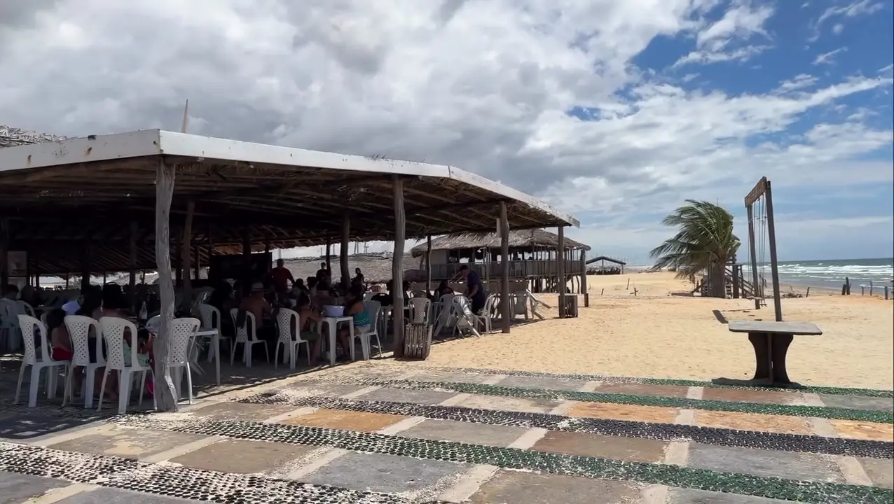

Excursões & Grupos
Atendimento Especial — Praia do Barro Vermelho
“Estrutura completa para o seu grupo na melhor praia do Maranhão”
Para grupos e agências
Atendimento para Excursões

A Barraca do Ivan é o ponto de parada preferido das agências de turismo que fazem excursões pela Praia do Barro Vermelho em Paulino Neves.
Oferecemos atendimento especial para grupos, com cardápio personalizado, estrutura para grandes quantidades e o melhor da hospitalidade maranhense. Seu grupo merece uma experiência inesquecível!
Atendemos grupos de agências de Barreirinhas, Tutóia, São Luís e de todo o Brasil que visitam os Lençóis Maranhenses.
Estrutura
O que oferecemos para seu grupo
Cardápio Personalizado
Montamos o cardápio ideal para o seu grupo, com opções de frutos do mar, pratos da culinária maranhense e bebidas geladas.
Atendimento Ágil
Com agendamento prévio, preparamos tudo com antecedência para que seu grupo seja atendido rapidamente sem esperar.
Localização Privilegiada
Diretamente na Praia do Barro Vermelho. Seu grupo come frutos do mar com vista para o mar e acesso direto à praia.
Preços para Grupos
Trabalhamos com preços especiais para grupos e agências de turismo. Entre em contato para negociar o melhor custo-benefício.
Reservas e informações
Agende sua Excursão
Entre em contato pelo WhatsApp para reservar e garantir o melhor atendimento para o seu grupo!
(11) 96917-0096
Falar sobre Excursões — WhatsAppPlanejamento
Roteiro sugerido com Barraca do Ivan
Roteiro Lençóis Maranhenses + Praia do Barro Vermelho
Saída de Barreirinhas — Manhã cedo, visita aos Lençóis Maranhenses
Almoço na Barraca do Ivan — Praia do Barro Vermelho, Paulino Neves (cardápio agendado)
Banho e lazer — Tarde na Praia do Barro Vermelho, passeio pelas dunas
Este roteiro é um dos mais procurados por agências de turismo do Maranhão. A Barraca do Ivan é a parada perfeita para o almoço, com frutos do mar frescos e uma localização diretamente na praia.